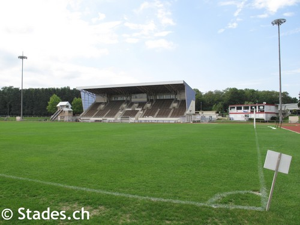
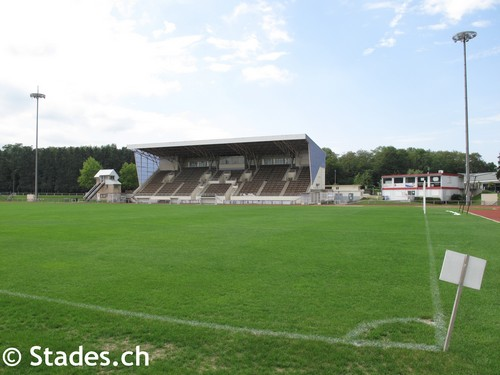
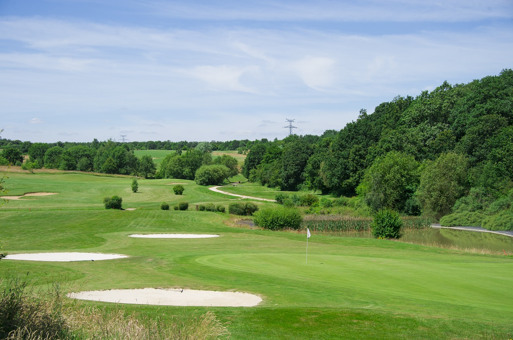
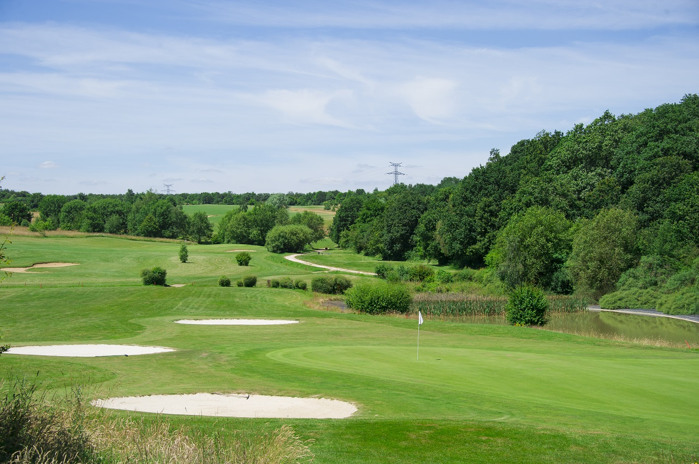

Découvrez Bowl de la Madeleine à Évreux : Un Parc Pas Comme les Autres
Évreux, la charmante ville située en Normandie, abrite de nombreuses attractions pour les familles en quête de divertissement. Parmi elles se trouve le fameux "Bowl de la Madeleine", un parc à l'atmosphère unique qui saura captiver les petits et les grands. Dans cet article, nous allons explorer les particularités de ce parc, déterminer à partir de quel âge il convient d'y emmener les enfants, et découvrir ce que l'on peut y trouver à proximité.
La Particularité de Bowl de la Madeleine
Bowl de la Madeleine, situé à Évreux (27000), est bien plus qu'un simple parc. Il se distingue par son esprit créatif et son ambiance conviviale. La principale particularité de ce lieu réside dans son offre de loisirs centrée autour de la glisse, du skateboard et du roller. Le parc dispose d'un skatepark de qualité, conçu pour les amateurs de ces sports urbains. C'est un endroit où les riders se retrouvent pour pratiquer leur passion, mais aussi où les novices peuvent s'initier grâce aux nombreux équipements et aux cours dispensés sur place.
Mais ce n'est pas tout ! Le Bowl de la Madeleine ne se limite pas aux activités de glisse. Vous y trouverez également une aire de jeux pour les plus jeunes, équipée de structures ludiques, de balançoires et de toboggans. C'est un lieu idéal pour que les enfants puissent s'amuser en toute sécurité pendant que les amateurs de skateboard et de roller s'adonnent à leur passion
Piscine Jean Bouin
La piscine Jean Bouin offre une surface de plan d’eau de 520 m², ainsi qu’un fond mobile, une pataugeoire, un bain à remous, une rivière à contre-courant, des jets massant, et un solarium. Elle est accessible aux personnes à mobilité réduite. Plusieurs activités y sont proposées : le jardin aquatique pour les jeunes enfants de 5 à 7 ans, la natation loisir,
d’apprentissage( à l’année ou en stage d’été pour les enfants), et de perfectionnement, des séances d’aquaphobie, des cours d’aquagym,
d’aquabiking, d’aquatraining lors d’événementiels…
Piscine municipale accessible à tous, elle se compose d’un bassin de natation de 25 m pour des pratiques sportives et de loisirs, d’une pataugeoire pour l’initiation des tout-petits, ainsi que d’installations propices à la détente (jets massant, bains à remous, solarium). Toute l’année, un planning d’activités est proposé aux plus jeunes comme aux adultes, afin d’apprendre, se perfectionner et se dépenser : leçons de natation, stages d’été, jardin aquatique, cours d’aquagym, d’aquabiking, d’aquatraining… Un terrain de jeu idéal pour toute la famille.
Bonjour,vous essayez actuellement de consulter notre site d'Evreux Discover sur votre téléphone, mais je suis au regret de vous annoncer que nous ne disposont pas encore de version web pour mobile
Du fait de sa complexité à adapter au écran plus petit !
Nous vous invitons donc à bien vouloir consulter notre site sur un ordinateur pour un meilleur confort d'Utilisation
Veuillez nous excuser pour la gène occasionée
Cordialement et à très vite sur notre site
L'equipe d'Evreux-Discover
 


 
